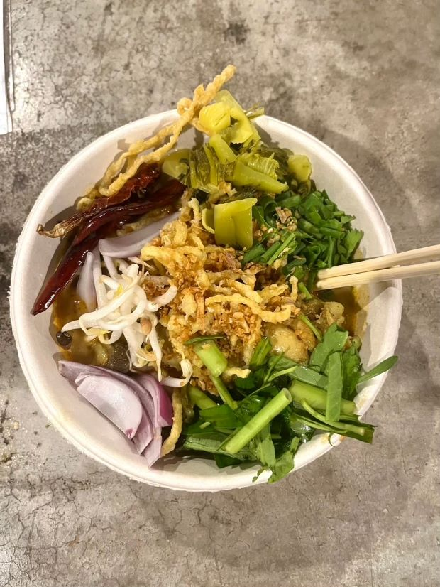
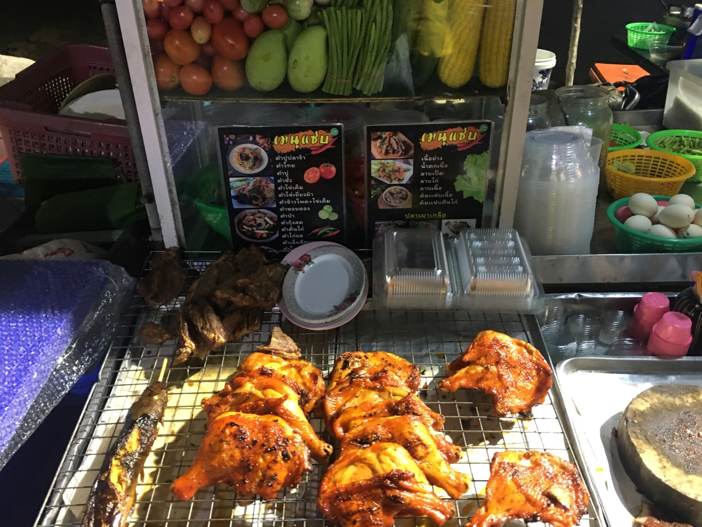
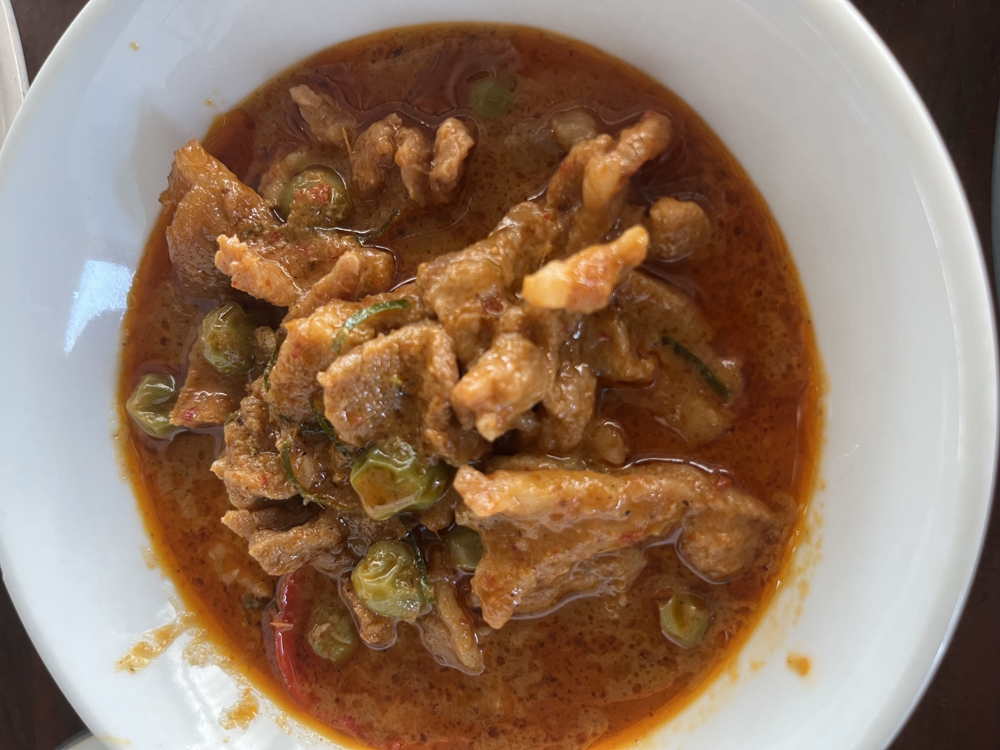
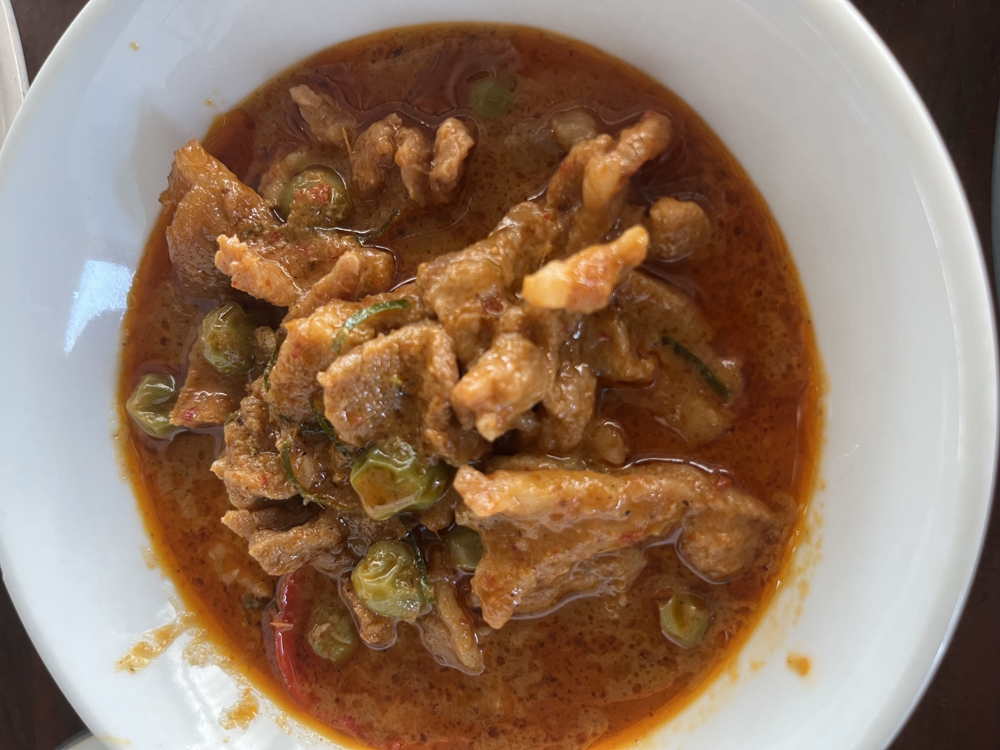
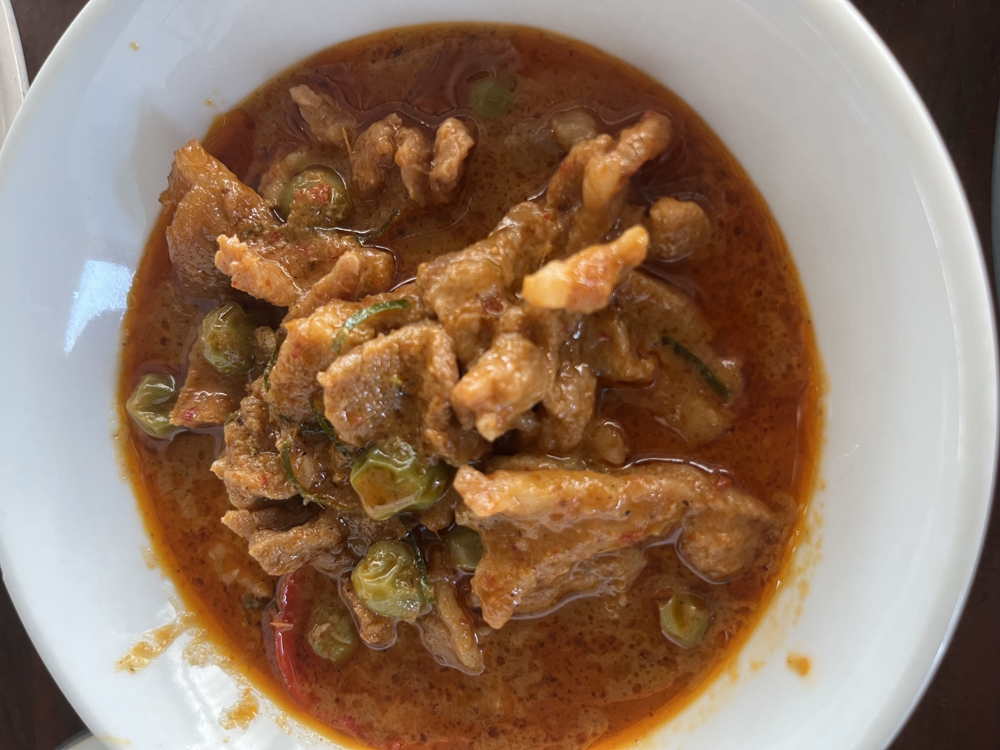

Discover the Flavors of Thailand: 10 Must-Try Dishes
from Every Region
Thailand's cuisine reflects its diverse regions, from Northern
curries and Northeastern salads to Central street foods and
Southern seafood dishes. This guide highlights "10 Thai Dishes You
Need to Try" from the North, Isaan, Central, and South.
Northern Thailand

1. Khao Soi (ข้าวซอย)
Khao Soi is a Northern Thai dish that features a creamy, spicy
coconut curry broth served over egg noodles. It's typically
garnished with crispy fried noodles, adding a delightful crunch.
The dish often includes tender pieces of chicken or beef, and
it's accompanied by a side of pickled mustard greens, shallots,
lime, and chili oil.
The combination of textures and flavors – creamy, crunchy,
spicy, and tangy – makes Khao Soi a favorite among locals and
visitors. It's a must-try for anyone looking to experience the
depth of Northern Thai cuisine.
2. Sai Oua (ไส้อั่ว)
Sai Oua, or Northern Thai sausage, is a flavorful grilled
sausage made from ground pork mixed with a variety of herbs and
spices. Key ingredients include lemongrass, kaffir lime leaves,
galangal, and red curry paste, which give the sausage its
distinctive taste.
The mixture is stuffed into natural casings and then grilled to
perfection. Sai Oua is typically served with sticky rice and
fresh vegetables. Its aromatic and slightly spicy flavor
profile, combined with the smoky char from the grill, makes it a
beloved dish in Northern Thailand.
Isaan (Northeast)
3. Som Tum (ส้มตำ)
Som Tum is a vibrant and refreshing green papaya salad that
hails from Northeastern Thailand. The salad is made by shredding
unripe papaya and mixing it with lime juice, fish sauce,
chilies, garlic, and palm sugar. Peanuts, tomatoes, and long
beans are often added for extra crunch and flavor.
Som Tum is known for its perfect balance of sweet, sour, salty,
and spicy tastes. It's a popular street food dish that pairs
well with sticky rice and grilled meats, offering a refreshing
contrast to the region's typically spicy and savory dishes.
4. Larb (ลาบ)
Description: Larb is a traditional Isaan minced meat salad that
is a staple of Northeastern Thai cuisine. It is typically made
with minced pork, chicken, or beef, and seasoned with lime
juice, fish sauce, roasted ground rice, and fresh herbs such as
mint and cilantro.
The salad is often spicy, with chilies adding a fiery kick. The
roasted ground rice provides a unique nutty flavor and slightly
crunchy texture. Larb is usually served with fresh vegetables
and sticky rice, making it a flavorful and satisfying dish that
highlights the bold and vibrant flavors of Isaan cuisine.
Central
5. Pad Ka Phrao (ผัดกะเพรา)
Pad Ka Phrao is a popular Thai street food dish featuring
stir-fried minced meat (commonly pork, chicken, or beef) with holy
basil, chilies, and garlic. The dish is often served over rice and
topped with a crispy fried egg.
The holy basil gives Pad Ka Phrao its distinct aroma and slightly
peppery taste, while the chilies provide a spicy kick. The savory
sauce, made with soy sauce, fish sauce, and oyster sauce, binds
the flavors together. Pad Ka Phrao is a quick, flavorful meal that
perfectly encapsulates the essence of Central Thai cuisine.
6. Kuay Teow (ก๋วยเตี๋ยว)
Kuay Teow, or Thai noodle soup, is a versatile and comforting dish
enjoyed throughout Central Thailand. It features a savory broth
made from pork, beef, or chicken, and is served with rice noodles
or egg noodles.
The soup is typically garnished with a variety of toppings such as
sliced meat, meatballs, bean sprouts, and greens. Seasonings like
fish sauce, chili flakes, vinegar, and sugar are provided on the
side, allowing diners to customize the flavor to their liking.
Kuay Teow is a beloved street food, known for its hearty,
satisfying nature and its ability to be tailored to individual
tastes.

7. Gai Yang (ไก่ย่าง)
Gai Yang, or Thai grilled chicken, is a popular dish in Central
Thailand, known for its juicy and flavorful meat. The chicken is
marinated in a mixture of lemongrass, garlic, cilantro, fish
sauce, and black pepper, then grilled until the skin is crispy and
the meat is tender.
It is often served with a spicy dipping sauce made from chilies,
garlic, lime juice, and fish sauce, which adds an extra layer of
flavor. Gai Yang is typically enjoyed with sticky rice and som tum
(green papaya salad), making it a well-rounded and satisfying
meal.
South

8. Kua Kling (คั่วกลิ้ง)
Kua Kling is a dry, spicy stir-fry that originates from Southern
Thailand. It is typically made with minced meat (pork or beef)
that is stir-fried with a southern-style curry paste. The paste is
made from dried chilies, lemongrass, kaffir lime leaves, and other
spices.
Kua Kling is known for its intense heat and robust flavors, with
the curry paste coating the meat and creating a flavorful crust as
it cooks. The dish is often served with fresh vegetables and rice
to balance the spiciness. Kua Kling is a favorite among those who
enjoy bold and spicy Thai dishes.
9. Penang Curry (แกงพะแนง)
Penang Curry, or Panang Curry, is a rich and creamy Thai curry
known for its thick consistency and mildly spicy flavor. The curry
is made with a Penang curry paste, which includes red chilies,
lemongrass, galangal, and other aromatic ingredients, mixed with
coconut milk.
It is typically cooked with meat such as beef or chicken and
garnished with finely sliced kaffir lime leaves, adding a fragrant
citrus note. The sweetness of the coconut milk balances the spice,
creating a harmonious and deeply satisfying dish. Penang Curry is
often served with steamed rice, making it a comforting and
delicious meal.
10. Gaeng Som (แกงส้ม)
Gaeng Som is a tangy and spicy curry that is a staple of Southern
Thai cuisine. The curry is made with a distinctive yellow curry
paste, fish, and vegetables such as green papaya or bamboo shoots.
Tamarind paste gives the curry its characteristic sour flavor,
while the chili paste adds heat.
Gaeng Som is known for its vibrant color and bold flavors, which
can range from tangy and spicy to slightly sweet, depending on the
ingredients used. This dish is often enjoyed with steamed rice and
is a perfect representation of the bold and dynamic flavors found
in Southern Thai cooking.


 
